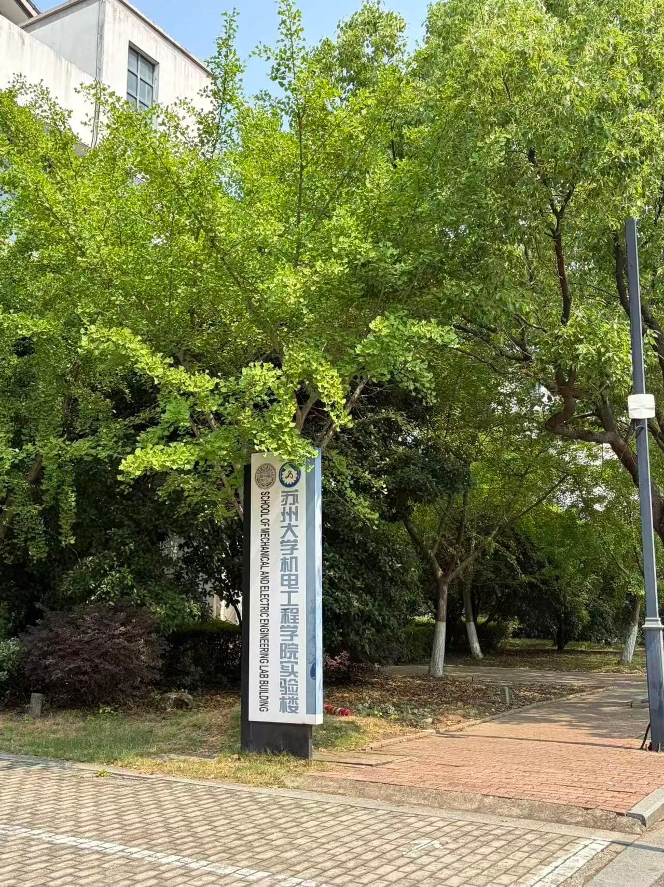
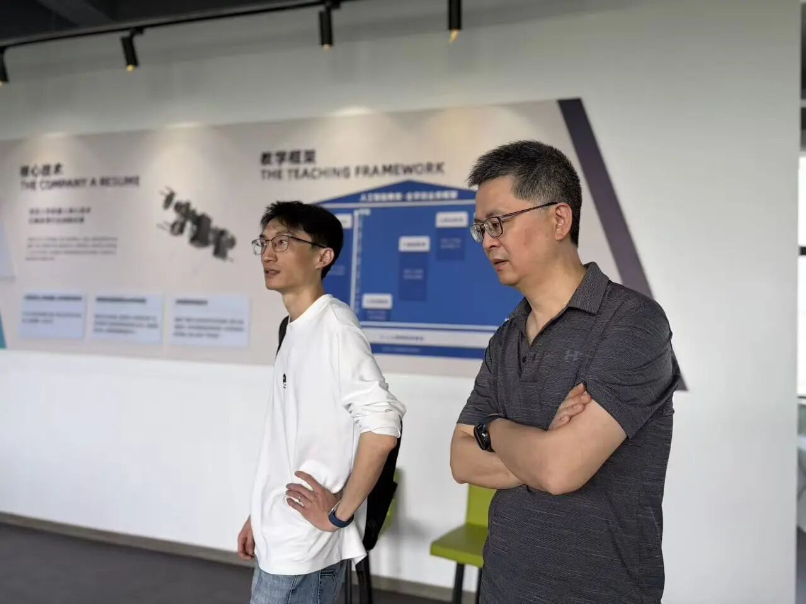
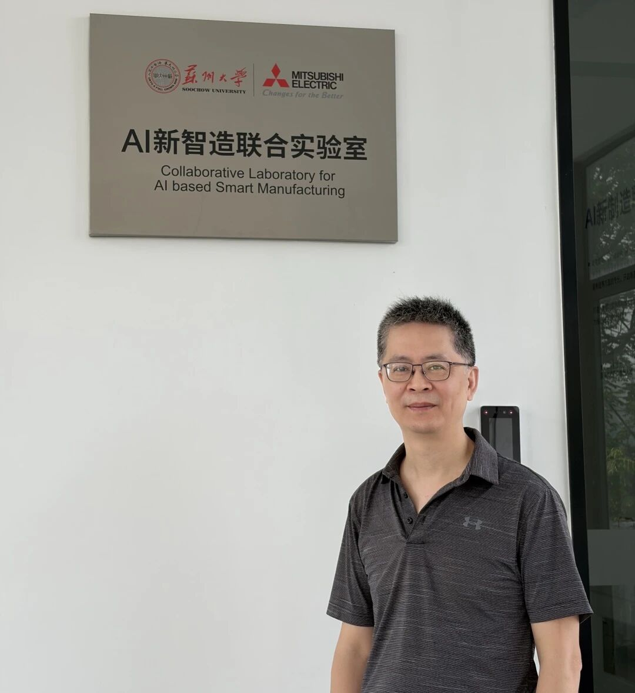
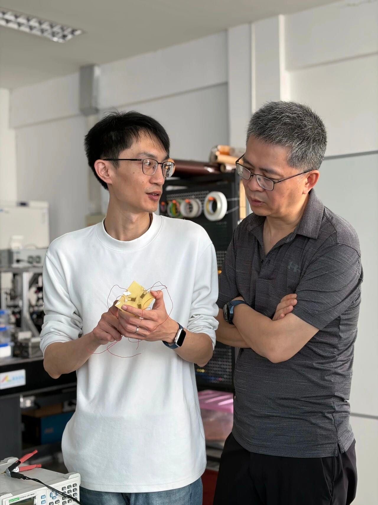
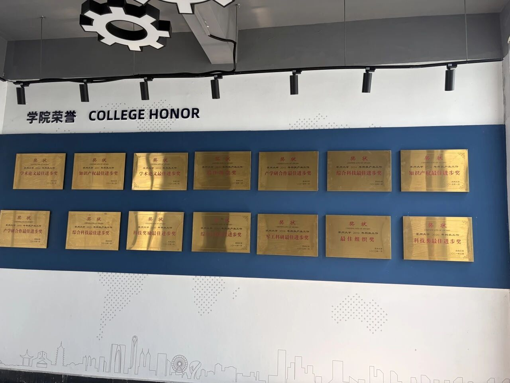
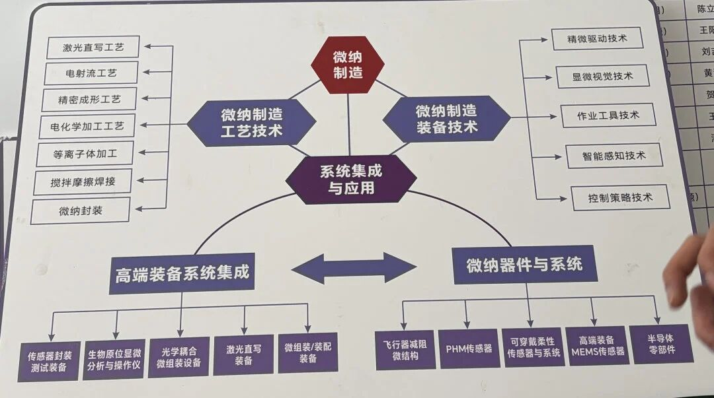
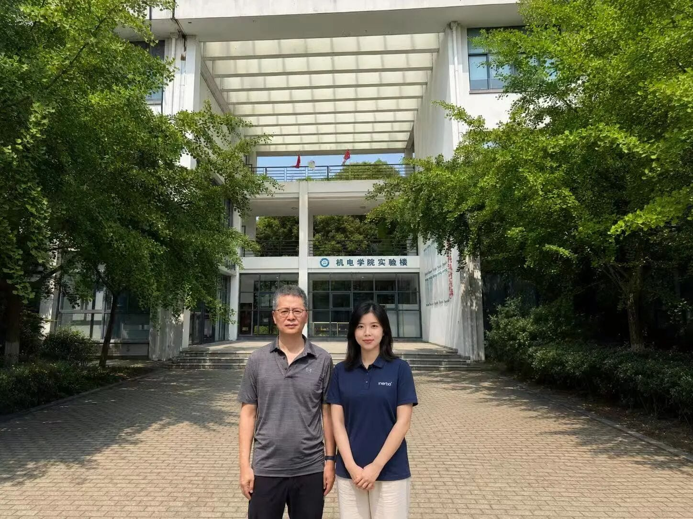
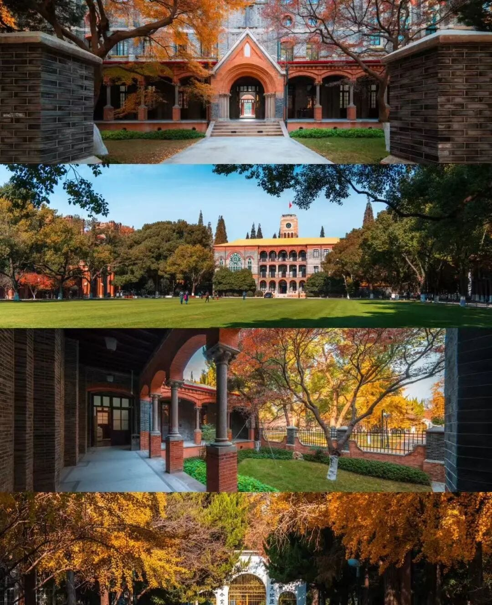
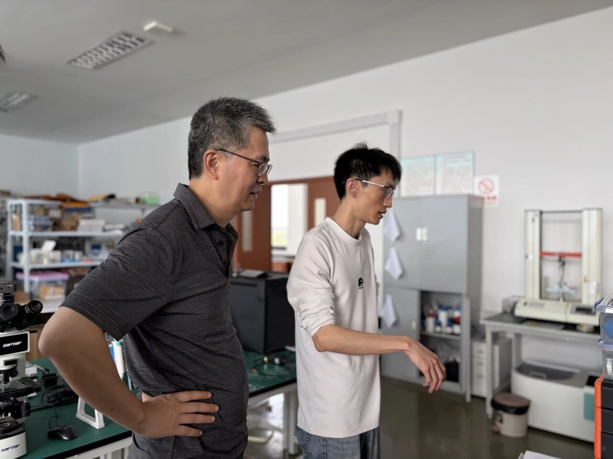
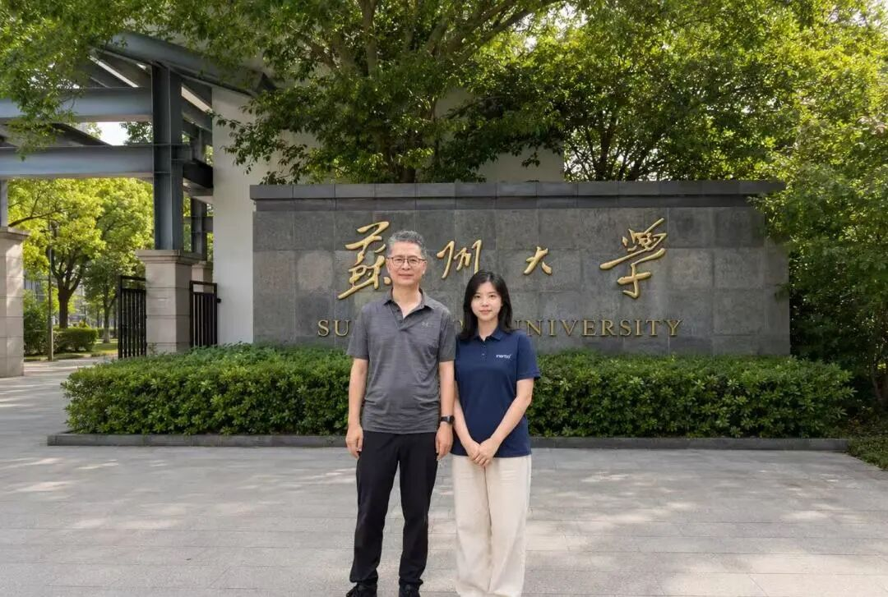

This visit was both a deep professional dive and a source of practical inspiration. Through face-to-face presentations and guided walkthroughs, the team gained a clearer understanding of how university laboratories approach advanced materials, process research, and frontier exploration — and how fundamental research connects to real-world engineering applications.

Step into frontier laboratories. Experience the power of innovation. The Inertia Guangzhou team recently visited Soochow University's engineering laboratory for an in-depth technical exchange. The discussions spanned nanomaterial synthesis, welding and joining technologies, interface engineering, and research commercialization pathways — complemented by hands-on tours of the laboratory's research facilities.

Part 1 Inside the Lab — Understanding Frontier Research Directions
During the exchange, Soochow University professors presented several research directions in materials and process engineering, including precursor materials, copper-based material preparation, nanomaterial synthesis, and the potential applications of two-dimensional materials in optoelectronics and beyond.
The discussions revealed the laboratory's sustained commitment to advancing material synthesis pathways, structural engineering approaches, and process exploration — offering a valuable window into the research logic that drives the advanced materials field. Several research approaches sparked new ideas around process organization and material construction, hinting at tighter integration between additive manufacturing and functional material forming.
Through direct dialogue, the team developed a more concrete understanding of the journey "from experimental synthesis to functional performance." The diverse technical pathways and application horizons across nanomaterials, 2D materials, and structural engineering provided meaningful reference points for bridging the gap between academic research and industrial practice.


For Inertia Guangzhou, the value of this exchange lies in deepening our grasp of the engineering logic behind frontier technologies — strengthening our ability to assess development pathways, validation priorities, and manufacturing feasibility when tackling innovative projects.
Part 2 From Traditional Welding to Micro-Scale Joining — Expanding What "Connection" Means
The professors also shared their work on welding and joining research. In the traditional sense, welding is oriented toward joining macro-scale structural components to meet overall strength and mechanical performance requirements. In more microscopic, materials-driven research contexts, however, "joining" also encompasses interface formation, bonding mechanisms, and performance control during material synthesis.

This extension — from macro-scale structural joining to micro-scale interfacial joining — gave the team a more complete picture of what "joining technology" entails. It is not merely a critical manufacturing method; it is intimately tied to material performance, structural stability, and downstream application realization. In advanced material synthesis and functional structure construction, interface engineering consistently proves to be one of the most consequential elements.


This resonates directly with Inertia Guangzhou's focus in real-world projects. Whether transitioning from test validation to volume production, or from pilot builds to full supply chain coordination, the true challenges often reside at critical interfaces, manufacturing details, and integration touchpoints. The deeper our understanding of these issues, the more robust the engineering support we can offer our clients.
Part 3 From Research Logic to Applied Thinking — The Value of Industry-Academia Collaboration
During the visit, both sides also discussed how to build more effective bridges between academic research and product commercialization. University laboratories bring deep expertise in fundamental research and process exploration, while industry focuses on validation efficiency, development cadence, manufacturability, and downstream deployment conditions. The productive interaction between the two exemplifies the value of industry-academia collaboration.
For the visiting team, the significance of this exchange went beyond learning about specific research directions. It revealed the systematic thinking behind rigorous scientific work: from material selection, process pathways, and equipment capabilities, through to testing and validation, performance evaluation, and application assessment — every link embodies disciplined research logic.



Part 4 Learning Through Exchange, Improving Through Learning
This visit to Soochow University's engineering laboratory not only deepened the team's understanding of advanced materials and manufacturing technologies, but also broadened our perspective on research platforms, methodologies, and pathways from discovery to application.
Going forward, Inertia Guangzhou is committed to strengthening engagement with university laboratories and innovation teams — broadening our horizons through learning, sparking new ideas through dialogue, and exploring new possibilities through collaboration. By continuously connecting research, engineering, and real-world application scenarios, we aim to provide our clients with support that is both forward-looking and grounded — across medical devices, smart hardware, and beyond.

Inertia Guangzhou team at Soochow University Engineering Laboratory
One visit is one learning journey. One exchange is one new beginning. In stepping into frontier laboratories and approaching cutting-edge research, we saw the depth of technology — and the expanding possibilities of engineering translation and industry collaboration.
Follow Inertia Guangzhou on WeChat
Stay updated on technical exchanges & product development insights